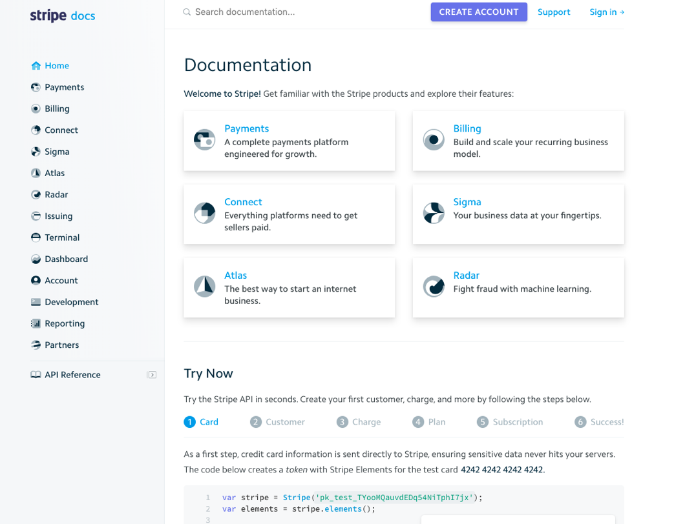

The way we are building software is changing. Just as we want to provide end users a good user experience (UX), we must build an API that is optimized for developer experience (DX).
There are a few core concepts that should be followed:
This document is a group of concepts ive found while doing research on API's and are the key concepts most important to me.
The API is designed around the REST ideology, providing simple and predictable URL's to access and modify objects. Requests support standard HTTP methods like GET, PUT, POST and DELETE and standard HTTP status codes. Response bodies are always UTF-8 encoded JSON(-LD) objects unless explicitly documented otherwise.
Whenever you think RESTful web service you should think HTTP because it has all the features that support you to build great web services.
Always use plurals when naming resources. Suppose we have a service that hosts a users resource. The following should be used to manage the resource.
Response codes are very important to help clients handle exceptions properly. Some of the most common are the following:
You can prove your API's worth in the docs themselves by allowing users to test a cURL response in the docs.
Make sure developers can figure out the parameters of the API's SDK integration as quick as possible. This is meant to save coding time and elimate any mental roadblocks hwile learning how your API functions within their framework fo choice. With a simple NodeJS, Python or Java SDK, developers should be able to build a full-featured integration in a fraction of the time.
Think of your API docs as the front page of your website. It's the central place users will bookmark and start using; it should be user-friendly, intuitive, and follow a logical flow.
The API docs need to be inherently discoverable and easy to use, just like the API itself. The docs must be easy to navigate with a clear table of contents and the main uses cases with examples right at the start.
Its important to ensure the API is usable, your interface is only as usable as your documentation, and your documentation is only helpful when its easily discoverable. The documentation shouldd be organized in a consistent way that is searchable and provide contextual coverage across the entire API integration process.
When building an API, change is inevitable. SOAPAPI's lead the way to REST API's, and REST API's are the precursor to GRAPH API's. JSON is the industry leading file format for today's APIS's but this is changing as technology develops.
Its important to build in versioning from Day 1. Taking fairly strict approach to change where it creates a new version of the API every time a change is necessary and changing nothing about the old version of the API will help keep companies using your API's. Make sure that yhou communicate changes early and often to ensure your customes can prepare fo rthe changes and that no changes disrupt the end users services. Using the basic major/minor sementaic versioning in your url can help.
A key factor when starting with any sort of development is the notion of the product. It defines the stand-alone entity that exposes useful functionality and benefits to the market. It is no easy task to design and implement an API that is easily consumable, scalable, properly documented, and secured without having a strong sense of responsibility and ownership in the process.
One common mistake when developing an API is not offering a way to filter or paginate results. When you expose an API that returns a list of items that can change over time, you need to establish a pagination strategy. The reason is simple. Clients, especially mobile ones, cannot view hundreds of list items at once. For example, you can show the first 10. If your API returns the whole database listing for each request, then a lot of resources are being wasted and the performance degrades substantially.
Modern frameworks offer a way to paginate results, but you can also customize your own. A common approach is to use LIMIT and OFFSET statements on your queries.
select * from people limit 5,10
That statement will retrieve the rows 6-16 from the database so you can provide a json response that give links to the first, next, previous and last page of that query based on the limit options.
{
"first": "/api/v1/people?page=1",
"prev": "/api/v1/people?page=1",
"next": "/api/v1/people?page=3",
"last": "/api/v1/people?page=9",
}
There are various ways to encode the propertname, the operator (such as eq, lte, gte) and the filter value for information you want to reduce. It is important to list all possible options for filtering in your API documentation and enforce strong validation on the input like checking if its a valid number, date, etc.
Sorting is also a very important feature for any API endpoint that returns lots of data. Some endpoints without pagination, a simple search could return millions or billions of results resulting in API calls that take minutes or even hours. To enable sorting add a sort parameter and add the ability to specify ascending or descending order.
REST is a proven and battle-tested architectural approach to providing API's, however its good to provide context around the set of resources without having prior knowledge of the internal URI scheme with th ehelp of HATEOAS. It enhances the response model of each resource by providing a set of relevant links so that it is easier to interact with the API. Without looking up a specification or other metadata service. One good format of HATEAOS is the HAL specification.
{
"_links": {
"self": {
"href": "/api/v1/people/1"
},
"/rels/people": [{
"href": "/api/v1/people/84",
"name": "Scott"
},{
"href": "/api/v1/people/94",
"name": "Mike"
}]
}
}
Security should not be neglected. Any breach can have a catastrophic consequence and lead to serious legal issues. Security controls need to be established early in the development process and your API must be accessed by na external vendor to ensure it will not be maliciously exploited. The CIA triad of security applies with the following:
It is easy to ignore the caching by including the header "Cache-control: no-cache" in responses of your API calls. HTTP defines a powerful caching mechanism that includes ETag header, If-Modified-Since header, and 304 Not Modified response code. They allow your clients and servers to negotiate always a fresh copy of the resource and through caching or proxy servers increas your applications scalability and performance.
The following ar ethe high level steps where the response header "ETag" along with conditional request header "If-None-Match" is used to cache the resource copy in the client brower:
While developing and testing your API plays a big part in the process, the real work does not end here. You need to continue providing support, even before the code is deployed to production. If something goes wrong, the right people need to be notified with actionable information, in order to respond by any means necessary. This constitutes a proactive approach when developing your API. If you keep things at bay, when endpoint issues emerge, you can prevent any catastrophic failures.
There are different ways we can prevent DDoS attacks; we can do IP blacklisting to avoid traffic from sources of attack, rate limit your application to prevent it from being overwhelmed, or use both of them to provide multiple layers of security.
Implementing a DoS attack with JMeter and Mulesoft.
Granularity is an essential principle of REST API design. As we understand, business functions divided into many small actions are fine-grained, and business functions divided into large operations are coarse-grained.
In some cases, calls across the network may be expensive, so to minimize them, coarse-grained APIs may be the best fit, as each request from the client forces lot of work at the server side, and in fine-grained, many calls are required to do the same amount of work at the client side.
Example: Consider a service returns customer orders in a single call. In case of fine-grained, it returns only the customer IDs, and for each customer id, the client needs to make an additional request to get details, so n+1 calls need to be made by the clients. It may be expensive round trips regarding its performance and response times over the network.
In a few other cases, APIs should be designed at the lowest practical level of granularity, because combining them is possible and allowed in ways that they suit the customer needs.
Example: An electronic form submission may need to collect addresses as well as, say, tax information. In this case, there are two functions: one is a collection of applicant's whereabouts, and another is a collection of tax details. Each task needs to be addressed with a distinct API and requires a separate service because an address change is logically a different event and not related to tax time reporting, i.e., why one needs to submit the tax information (again) for an address change.
Functional testing of REST APIs entails sending HTTP requests and checking responses so that we can verify that APIs behave as we expect. REST uses HTTP for transport that specifies the request and response formats of API. TCP/IP, in turn, takes the HTTP messages and decides how to transport them over the wire.
cURL is a popular command line tool that usese its own HTTP stack and is available on all platforms.
Postman is a REST client that allows us to test REST API's. It allows us to create http request and generate the equivalent cURL commands we can use. It creates multiple environments for Dev, Test, Pre-Prod as each environment has different configurations.
Burp is a HTTP debugger that let us see the web traffic that goes between the client and the API. It runs as a proxy between the client and the server. This allows us to intercept the request and the reponse and modify them to create scenarios that are otherwise difficult to test without changing the client. It is a suite of tools that is mainly used for security testing but it can be very useful for API testing as well. Set up your postman to send request to Burp proxy and configure Burp to intercept client request and server response. Intercept request and response as shown below.
Verification of some features of API, e.g., encryption, compression, etc., will require us to look a level deeper to see what is being sent and received on the network. Wireshark is a tool that monitors network interface and keeps a copy of all TCP packets that pass through it. Traffic is split by layers — HTTP, TCP, IP, etc. It also helps us to troubleshoot issues that require us to go deeper, e.g., TLS handshake.
JMeter is a load testing tool which can help test the amount of load that can be placed on your API and make sure that quotas, limits and DoS attacks will not affect your other cutomers.
Other useful links to gather information from:
{kind=link}